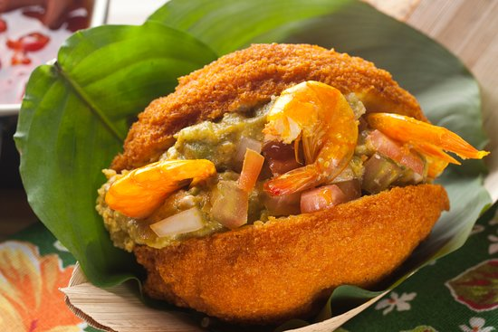

Acarajé

A delicious acarajé
Acarajé is a gastronomic specialty of African and Afro-Brazilian cuisine.
It is a dumpling made of black-eyed pea dough, onion and salt, and fried in palm oil.
Ingredients:
- 1,10 lb of raw black-eyed peas
- 1,10 lb of onion
- salt to taste
- 1 small onion with skin
- 16.90 fl oz of oil
- 16.90 fl oz of palm oil
- 2 cups of vatapá
- 0.33 lb of dry shrimp
Step by step
- Place the whole beans in a food processor and pulse for a few seconds to break up the beans.
- Be careful to dont crumble.
- Place the beans in a bowl and cover with water.
- Soak for at least 12 hours.
- Shake the beans with a spoon and with a sieve, remove all the husks that come off the beans.
- After removing the skins enough, wash the beans under running water and continue removing the rest of the skins.
- Reserve.
- Peel the onions.
- Cut into pieces.
- Reserve.
- In a food processor, place the beans and onions.
- Blend for 3 minutes, or until you get a smooth, uniform paste.
- Remove all the paste from the food processor and place it in a large, deep pan.
- With a wooden spoon, beat the acarajé mass until the mass triples in volume.
- This process is quite time consuming but it is very important for fermentation.
- Place the oil, palm oil, and the unpeeled onion in a medium saucepan and heat over high heat.
- With two tablespoons, shape the acarajés: fill one of the spoons with the dough, move from one spoon to the other until the dough is in the shape of a cupcake.
- Place the dumplings in the hot oil and fry for 3 minutes on one side.
- With a slotted spoon, turn the dumplings and fry until golden.
- Adjust the oil temperature.
- If necessary, lower the flame so that the oil does not burn.
- Remove the dumplings with a slotted spoon and place on absorbent paper.
- Cut the dumplings in half and fill with vatapá.
- Place the dried shrimp inside the acarajé and close.
- Serve next.
Also you can modify the recipe the way you think better, you can cut some tomatoes, put some ground beef etc.